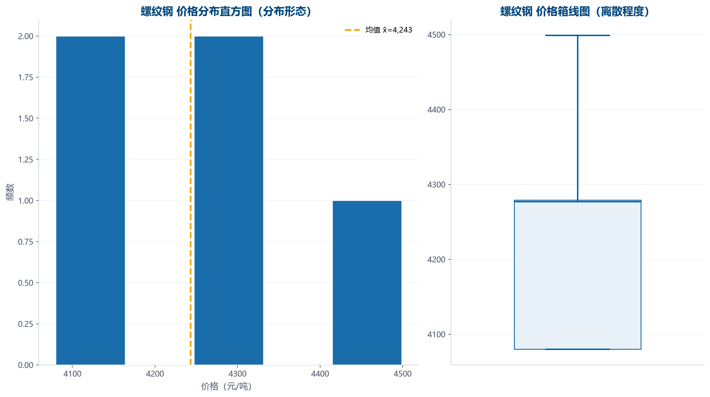
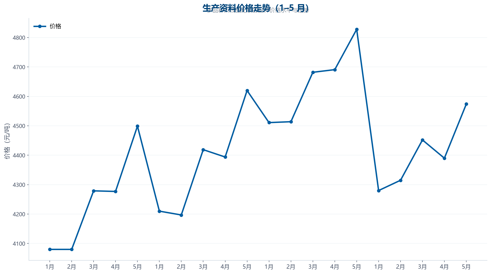

① 需求 · 先明确问题，再动手分析（DIG 起点）
Q
要回答的业务问题
黑色金属类生产资料 1–5 月价格如何分布？整体处于什么水平？各品种价格波动有多大？
D
数据来源
1–5 月 × 4 个生产资料品种（螺纹钢/线材/中厚板/热轧卷板）的价格，单位：元/吨
G
希望的结果
输出 集中趋势（均值/中位数/众数）+ 离散程度（极差/方差/标准差/四分位差/平均差/变异系数）+ 分布形态（偏度/峰度），每个指标带公式与解释
② D 描述数据 · 先理解数据，再分析
记录数
5
行
字段数
5
列
月份跨度
5
1月~5月
品种
4
黑色金属类
| 字段 | 类型 | 缺失 | 缺失率 | 唯一值 | 样例 |
|---|---|---|---|---|---|
| 月份 | 文本 | 0 | 0.0% | 5 | 1月、2月 … |
| 螺纹钢 | 数值 | 0 | 0.0% | 4 | 4080、4279 … |
| 线材 | 数值 | 0 | 0.0% | 5 | 4210、4197 … |
| 中厚板 | 数值 | 0 | 0.0% | 5 | 4511、4514 … |
| 热轧卷板 | 数值 | 0 | 0.0% | 5 | 4280、4315 … |
| 月份 | 螺纹钢 | 线材 | 中厚板 | 热轧卷板 |
|---|---|---|---|---|
| 1月 | 4080 | 4210 | 4511 | 4280 |
| 2月 | 4080 | 4197 | 4514 | 4315 |
| 3月 | 4279 | 4419 | 4682 | 4452 |
| 4月 | 4277 | 4394 | 4691 | 4390 |
| 5月 | 4499 | 4620 | 4828 | 4574 |
③ I 挖掘数据 · 指标计算（每个指标四件套）
品种数
4
螺纹钢/线材/中厚板/热轧卷板
均值（螺纹钢）
4,243
元/吨
中位数（螺纹钢）
4,277
元/吨
标准差（螺纹钢）
174.02
元/吨
变异系数
4.1%
无量纲
集中趋势·均值x̄ = Σx / n
代入x̄ = 21,215 / 5
结果4,243
解释平均值为 4,243，表示数据的「重心」所在。
集中趋势·中位数M = 排序后居中的值
代入n=5，取第 3 位数值
结果4,277
解释中位数为 4,277，表示有一半数据低于该值，不受极端值影响。
集中趋势·众数众数 = 出现次数最多的值
代入最高频取值为 4080.0（出现 2 次）
结果4,080
解释众数为 4,080，是数据中出现最频繁的值（取最小众数，与 Excel MODE 一致）。
离散程度·极差R = max − min
代入R = 4,499 − 4,080
结果419
解释极差为 419，反映数据整体的波动跨度。
离散程度·平均差A.D. = Σ|x − x̄| / n
代入A.D. = 652 / 5
结果130.4
解释平均差为 130.4，表示各数据偏离平均值的平均幅度。
离散程度·方差s² = Σ(x − x̄)² / (n − 1)
代入s² = 121,126 / 4
结果30,281.5
解释样本方差为 30,281.5，是离散程度的平方度量（无偏估计）。
离散程度·标准差s = √s²
代入s = √30,281.5
结果174.02
解释标准差为 174.02，与数据同量纲，是最常用的离散程度指标。
离散程度·四分位差IQR = Q3 − Q1
代入IQR = 4,279 − 4,080
结果199
解释四分位差为 199，反映中间 50% 数据的离散程度，抗极端值。
离散程度·变异系数CV = s / x̄
代入CV = 174.02 / 4,243
结果0.041
解释变异系数为 4.10%，无量纲，可跨组比较离散程度。
分布形态·偏度偏度 SK = Σ(x − x̄)³ / (n·s³)
代入（样本偏度，n=5）
结果0.649
解释右偏（正偏），右侧有长尾，均值通常大于中位数。
分布形态·峰度峰度 K = Σ(x − x̄)⁴ / (n·s⁴) − 3
代入（样本超额峰度，正态分布为 0）
结果-0.216
解释峰度接近正态分布水平。
| 品种 | 均值(元/吨) | 标准差 | 极差 | 变异系数 |
|---|---|---|---|---|
| 螺纹钢 | 4,243 | 174.02 | 419 | 4.1% |
| 线材 | 4,368 | 173.92 | 423 | 4.0% |
| 中厚板 | 4,645.2 | 134.25 | 317 | 2.9% |
| 热轧卷板 | 4,402.2 | 116.92 | 294 | 2.7% |
④ 图表 · 分布形态与价格走势

图表目的：观察价格集中区间、对称性与离群点
核心发现：螺纹钢 价格集中在均值附近，箱线图可看出上下四分位与离群点

图表目的：比较 4 个品种的价格水平与 5 个月走势
核心发现：各品种价格水平分层明显，整体小幅波动
⑤ G 给出产出 · 分层结论（事实 / 分析 / 推测 / 建议）
WHY
为什么重要
螺纹钢 均价 4,243 元/吨，标准差 174.02 元/吨，变异系数 4.1%。
WHAT
数据告诉我们什么
价格水平与波动幅度是采购/库存决策的重要参考；变异系数可跨品种比较稳定性。
HOW
怎么用 / 怎么优化
[('事实', '各品种 5 个月价格均值区间 [4243, 4645] 元/吨。'), ('分析', '螺纹钢 中位数 4,277 元/吨与均值接近，分布近似对称。'), ('推测', '价格波动主要受原材料成本与市场供需影响（5 个月样本较短，仅反映短期特征）。'), ('建议', '关注波动系数最高的品种，制定弹性采购策略以对冲价格风险。')]
⑥ 推荐 Prompt · 学生可复制后自行用 AI 复现同款分析
推荐 Prompt（学生可复制此提示词，自行用 AI 复现同款分析）
请对这份生产资料价格数据做描述性统计分析（CSV：月份、螺纹钢、线材、中厚板、热轧卷板，元/吨）。要求：1) 计算各品种的均值、中位数、众数、极差、方差、标准差、四分位差、平均差、变异系数、偏度、峰度；2) 每个指标给出计算公式和代入过程，不只是数字；3) 用直方图+箱线图展示分布，折线图比较走势；4) 解释数字的业务含义。
学生验收要点：众数取最小众数（与 Excel MODE 一致）；方差为样本无偏（n−1）；变异系数 = 标准差/均值。
⑦ QA 验证 · 数值复算 / 逻辑检查 / 输出一致性
| 检查项 | 说明 |
|---|
QA 验证：0 / 0 项检查通过